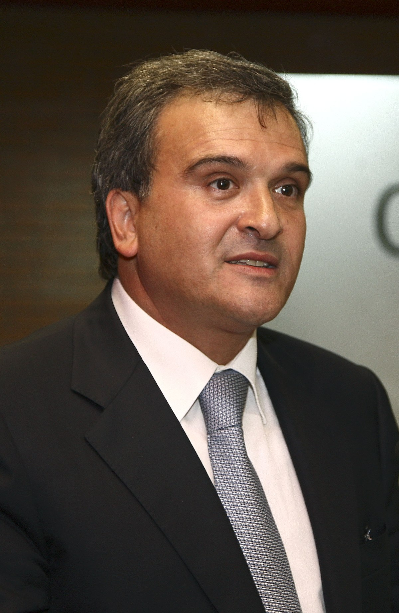

A história da Juventude Social Democrata é marcada por dedicação, empenho e a luta por um futuro melhor. Desde a sua fundação, a JSD tem desempenhado um papel crucial na política jovem, inspirando novas gerações.
Figuras Marcantes da JSD
Pedro Passos Coelho
Foi presidente da JSD (1990-1995), promovendo uma linha mais liberal e reformista. Apostou na formação política e no reforço da autonomia da JSD dentro do PSD, aproximando a organização de juventudes partidárias europeias. Muitos dos quadros formados sob a sua liderança viriam a ter papéis de destaque no partido.


Miguel Relvas
Teve um papel estratégico na JSD nos anos 80, contribuindo para a modernização e estruturação organizativa da juventude social-democrata. Ajudou a reforçar a presença da JSD no debate político e a preparar novos quadros para o partido, tornando-se depois um influente dirigente do PSD.
Luís Montenegro
Destacou-se na JSD como presidente da Distrital de Aveiro, sendo reconhecido pela sua capacidade de argumentação e mobilização. Defendeu o envolvimento dos jovens na política, focando-se na educação e no emprego jovem. A sua passagem pela JSD foi essencial para a sua futura ascensão no PSD.

Luís Marques Mendes